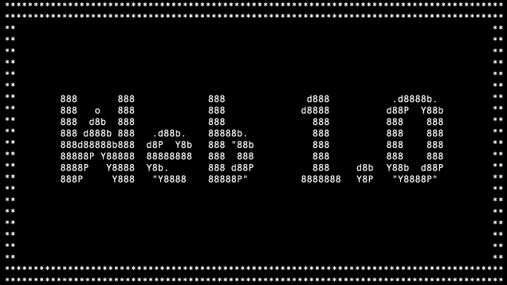

Línea del Tiempo Evolución de la Web
Web 1.0

Es la primera generación de la Web, y es considerada como la Web en la que solamente era posible buscar y leer el contenido.
Los usuarios no tenían la posibilidad de agregar el contenido a voluntad, ya que esta acción estaba delegada únicamente a los usuarios
expertos (técnicos, informáticos o sistemas).
Web 2.0
Los términos web 2.0 y web social aluden a aquellos sitios web que facilitan compartir información, la interoperabilidad, el diseño
centrado en el usuario y la colaboración en la World Wide Web. Permiten a los usuarios interactuar y colaborar entre sí,
Web 3.0
La Web 3.0 es el término que se utiliza para describir una red informática en la que todos los datos están conectados y en la que todas
las máquinas procesan el contenido de igual forma que los humanos. En ella, los usuarios pueden interactuar mediante lenguaje natural y
acceder al contenido de manera muy sencilla mientras que las máquinas interpretan el software procesando las peticiones con rapidez.
Web 4.0
Web 4.0 es una capa de integración necesaria para la explotación de la Web semántica y sus enormes posibilidades. Es un nuevo modelo de
Internet que nace con el objetivo de resolver las limitaciones de la red a día de hoy.
Regresar al inicio